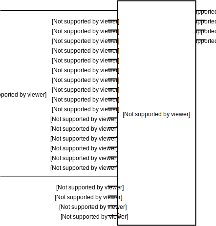

Processor
ArithmeticLogicUnit
Class bw.processor.ArithmeticLogicUnit
Defined in bitwise/processor/ALU.py.
16-bit arithmetic logic unit, with functions defined below.
__init__
__init__(
a_bus,
b_bus,
function_select_bus,
overflow,
carry_out,
output_bus
)
Construct a new 16-bit arithmetic-logic unit with the following functions:
0000: a
0001: NOT a
0010: b
0011: NOT b
0100: a AND b
0101: a NAND b
0110: a OR b
0111: a NOR b
1000: a XOR b
1001: a XNOR b
1010: a PLUS b
1011: NOT (a PLUS b)
1100: a MINUS b
1101: NOT (a MINUS b)
1110: 0
1111: 1
Args:
a_bus: An object of typeBus16. The first input to the ALU. The first addend in add operations and the minuend in subtract operations. Also the number to be compared.a_bus[0]anda_bus[15]are the most and least significant bit, respectively.b_bus: An object of typeBus16. The second input to the ALU. The second addend in add operations and the subtrahend in subtract operations. Also the number to be compared against.b_bus[0]andb_bus[15]are the most and least significant bit, respectively.fn_select_bus: An object of typeBus4. The function select input of the ALU, with functions defined above.fn_select_bus[0]andfn_select_bus[3]are the most and least significant bit, respectively.overflow: An object of typeWire. The arithmetic overflow indicator. Only valid for functions1100and1101(subtract operations).carry_out: An object of typeWire. The carry-out. Only valid for functions1010and1011(add operations).output_bus: An object of typeBus16. The output of the ALU.output_bus[0]andoutput_bus[15]are the most and least significant bit, respectively.
Raises:
TypeError: If eithera_bus,b_bus, oroutput_busis not a bus of width 16, or iffn_select_busis not a bus of width 4.
ConditionCodeFlags
Class bw.processor.ConditionCodeFlags
Defined in bitwise/processor/FLAG.py.
__init__
__init__(
data_bus,
overflow,
carry_out,
clock,
z,
v,
n,
c
)
Construct a new set of condition code flag flip-flops.
Args:
data_bus: An object of typeBus16. The data input to the flip-flops.overflow: An object of typeWire. The overflow input.carry_out: An object of typeWire. The carry-out input.clock: An object of typeWireorClock. The clock input to the flip-flops.z: An object of typeWire. Indicates when the value ondata_busis equal to zero.v: An object of typeWire. Indicates when an arithmetic operation produces an overflow.n: An object of typeWire. Indicates when the value ondata_busis negative.c: An object of typeWire. Indicates when an arithmetic operation produces a carry-out.
Raises:
TypeError: Ifdata_busis not a bus of width 16.
ProgramCounter
__init__
__init__(
data_bus,
up,
load,
clock,
output_bus
)
Construct a new program counter with a 16-bit address space.
Args:
data_bus: An object of typeBus16.up: An object of typeWire. If its value is 1, increments the program counter on the positive clock edge.load: An object of typeWire. If its value is 1, loads the value ofdata_businto the program counter on the positive clock edge. If both up and load have value 1,loadtakes precedence.clock: An object of typeWireorClock. The clock input.output_bus: An object of typeBus16. The address of the instruction to be executed.
Raises:
TypeError: If eitherdata_busoroutput_busis not a bus of width 16.
StackPointer
__init__
__init__(
up,
down,
clock,
output_bus
)
Construct a new stack pointer to a 16-bit address space.
Args:
up: An object of typeWire. If its value is 1, increments the stack pointer on the positive clock edge.down: An object of typeWire. If its value is 1, decrements the stack pointer on the positive clock edge. If bothupanddownhave value 1,downtakes precedence.clock: An object of typeWireorClock. The clock input.output_bus: An object of typeBus16. The address on top of the stack.
Raises:
TypeError: Ifoutput_busis not a bus of width 16.